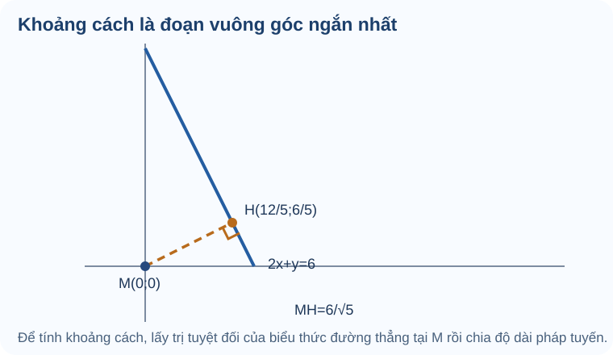

Bài 20. Vị trí tương đối, góc và khoảng cách
TOÁN 10 · CHƯƠNG VII · KIẾN THỨC SGK KNTT
Xác định vị trí tương đối, góc và khoảng cách trong mặt phẳng tọa độ.
Cùng tìm hiểu
Hai đường thẳng trên bản đồ có thể cắt nhau, song song hoặc trùng nhau. Nếu ta chỉ nhìn hình vẽ phóng to hoặc thu nhỏ, rất dễ đoán nhầm. Phương pháp tọa độ cho phép đọc đúng quan hệ từ hệ số và các vectơ pháp tuyến.
Khi cần khoảng cách từ một điểm đến đường thẳng, đường nối bất kỳ không đủ: khoảng cách được đo theo đoạn vuông góc ngắn nhất. Công thức khoảng cách trông như một phân số có căn, nhưng thực ra nó đo độ lệch có dấu ở tử số, rồi chia cho độ dài pháp tuyến để đổi thành độ dài thật.
Góc giữa hai đường thẳng cũng có thể tính từ góc giữa các vectơ chỉ phương hoặc pháp tuyến, nhưng cần lấy góc nhỏ giữa hai đường, không bê nguyên góc tù giữa hai mũi tên.
Ví dụ trực quan
Hãy tự giải từng câu Tự thử trước khi mở Đối chiếu. Nếu vướng, hãy đọc phần tự khắc phục và tự làm lại một bài tương tự.
Song song, trùng, cắt
Hai con đường có cùng hướng chưa chắc là cùng một đường; xác định vị trí tương đối cần xét cả nơi chúng đi qua.
Kiến thức tiền đề: Ôn pháp tuyến của ax+by+c=0; khi hai cặp pháp tuyến tỉ lệ, hai đường có cùng hướng.
Bản chất trước công thức: Định thức a1b2-a2b1 khác 0 thì hai đường cắt nhau. Bằng 0 chỉ nói cùng hướng: xét thêm c để phân biệt song song khác nhau và trùng nhau.
Hướng dẫn đọc hình: Đặt cạnh nhau ba hình cắt, song song phân biệt, trùng; hai hình sau có cùng hướng nhưng khác vị trí.
Kiểm pháp tuyến khác 0; kiểm định thức; nếu bằng 0, so sánh đủ bộ ba hệ số, tránh chia cho hệ số 0.
Vận dụng. d1: 2x-y+1=0, d2: 4x-2y+3=0 là song song phân biệt hay trùng nhau?
Đối chiếu
Đáp án: Song song phân biệt.
Lý do: Hai pháp tuyến (2,-1) và (4,-2) tỉ lệ 2 lần, nhưng nhân toàn phương trình d1 với 2 cho hằng số 2, không phải 3 của d2.
Nếu chưa đúng: Mở hướng dẫn tự sửa ngay bên dưới, xem lại bước còn vướng rồi thử một câu cùng kiến thức.
Mở câu luyện tập tương ứng để tự luyện
Đường thẳng vuông góc qua điểm
Khi dựng một lối đi cắt tuyến đường cũ theo góc vuông, ta phải kiểm cả hướng lẫn vị trí đi qua điểm đã cho.
Kiến thức tiền đề: Ôn pháp tuyến của đường thẳng và điều kiện hai pháp tuyến vuông góc khi tích vô hướng bằng 0.
Bản chất trước công thức: Nếu hai đường vuông góc thì hai pháp tuyến của chúng cũng vuông góc (đều bị quay cùng 90 độ so với đường). Điểm quyết định tịnh tiến đường mới.
Hướng dẫn đọc hình: Vẽ đường d và đường qua P vuông góc với d; chỉ ra vì sao đường qua P có thể di chuyển song song mà vẫn vuông góc.
Chọn n' vuông góc với n của d, rồi dùng n'·PM=0; kiểm P thuộc đường mới và n·n'=0.
Vận dụng. Qua P(1,-2) viết đường vuông góc với d: x+2y-5=0.
Đối chiếu
Đáp án: 2x-y-4=0.
Lý do: n=(1,2) của d, chọn n'=(2,-1) có tích vô hướng 0. Qua P: 2(x-1)-(y+2)=0 ⇒ 2x-y-4=0.
Nếu chưa đúng: Mở hướng dẫn tự sửa ngay bên dưới, xem lại bước còn vướng rồi thử một câu cùng kiến thức.
Mở câu luyện tập tương ứng để tự luyện
Tọa độ giao hai đường
Tìm chỗ hai tuyến đường gặp nhau tương đương tìm một cặp tọa độ thỏa đồng thời hai điều kiện.
Kiến thức tiền đề: Nhắc giải hệ hai phương trình bậc nhất và phép thế kiểm nghiệm.
Bản chất trước công thức: Một giao điểm là nghiệm chung của hai phương trình; giải từng phương trình riêng không đủ.
Hướng dẫn đọc hình: Vẽ hai đường giao nhau; đánh dấu giao và thử nhận xét vì sao một điểm nằm riêng trên d1 chưa chắc thuộc d2.
Lập hệ đúng hai phương trình, giải bằng thế/khử, kiểm tọa độ cuối ở cả hai. Nếu hệ vô nghiệm, không được bịa giao điểm.
Vận dụng. Tìm giao điểm của x+2y=8 và 2x-y=1.
Đối chiếu
Đáp án: I(2,3).
Lý do: Từ 2x-y=1 ⇒ y=2x-1. Thế vào x+2(2x-1)=8 ⇒ x=2, y=3; kiểm 2+6=8, 4-3=1.
Nếu chưa đúng: Mở hướng dẫn tự sửa ngay bên dưới, xem lại bước còn vướng rồi thử một câu cùng kiến thức.
Mở câu luyện tập tương ứng để tự luyện
Khoảng cách điểm đến đường
Khoảng cách ngắn nhất từ một vị trí đến con đường là độ dài đoạn vuông góc, không phải độ dài đến một điểm tùy ý trên đường.
Kiến thức tiền đề: Ôn độ dài vectơ pháp tuyến (a,b) và giá trị tuyệt đối của số thực.
Bản chất trước công thức: Biểu thức axM+byM+c đo độ lệch có dấu theo pháp tuyến chưa chuẩn hóa; chia √(a²+b²) đổi thành độ dài thật và lấy trị tuyệt đối.
Hướng dẫn đọc hình: Chỉ đoạn vuông góc ngắn nhất từ M tới d, phân biệt với đoạn xiên đến một điểm khác trên d; dấu của biểu thức đổi khi M ở hai phía.
Kiểm (a,b)≠(0,0), tính |axM+byM+c|/√(a²+b²). Kết quả phải ≥0; nếu M nằm trên d thì khoảng cách 0.
Vận dụng. Tính khoảng cách từ M(1,2) đến d: 3x+4y-1=0.
Đối chiếu
Đáp án: d(M,d)=2.
Lý do: Tử |3·1+4·2−1|=10, mẫu √(3²+4²)=5, nên khoảng cách bằng 10/5=2.
Nếu chưa đúng: Mở hướng dẫn tự sửa ngay bên dưới, xem lại bước còn vướng rồi thử một câu cùng kiến thức.
Mở câu luyện tập tương ứng để tự luyện
Góc nhỏ giữa hai đường
Hai tuyến đường không vuông góc vẫn cần một thước đo góc độc lập với việc chúng ta chọn mũi tên hướng nào.
Kiến thức tiền đề: Ôn tích vô hướng, độ dài vectơ và cosin góc giữa hai vectơ khác 0.
Bản chất trước công thức: Góc nhỏ giữa hai đường nằm từ 0 đến 90 độ; đổi hướng một pháp tuyến không làm đổi góc nhỏ nên lấy trị tuyệt đối tích vô hướng.
Hướng dẫn đọc hình: So sánh góc nhọn với góc tù bù nhau do đảo chiều mũi tên; góc giữa đường là góc nhỏ nên không phụ thuộc chiều vectơ.
Dùng |n1·n2|/(||n1||||n2||) và kiểm 0≤cosφ≤1. Đừng nhầm góc tù giữa hai vectơ với góc nhỏ giữa hai đường.
Vận dụng. Góc nhỏ giữa d1: x=0 và d2: x-y=0 bằng bao nhiêu?
Đối chiếu
Đáp án: 45°.
Lý do: Pháp tuyến n1=(1,0), n2=(1,-1). cosφ=|1|/(1·√2)=1/√2 nên φ=45°.
Nếu chưa đúng: Mở hướng dẫn tự sửa ngay bên dưới, xem lại bước còn vướng rồi thử một câu cùng kiến thức.
Mở câu luyện tập tương ứng để tự luyện
Thuật ngữ, kiến thức và kỹ năng
Thuật ngữ: Vị trí tương đối của hai đường thẳng, song song/trùng/cắt, góc giữa hai đường, khoảng cách điểm đến đường.
Sau bài học, em cần làm được: Xét quan hệ của hai phương trình; giải giao điểm; nhận biết pháp tuyến; tính góc nhỏ và khoảng cách với mẫu dương, kiểm đơn vị.
2.1. Vị trí tương đối giữa hai đường thẳng
Với \(d_1:a_1x+b_1y+c_1=0\) và \(d_2:a_2x+b_2y+c_2=0\), mỗi cặp \((a_i;b_i)\ne(0;0)\):
- Nếu \(a_1b_2-a_2b_1\ne0\): hai đường cắt nhau tại một điểm.
- Nếu \(a_1b_2-a_2b_1=0\): cần so sánh cả ba hệ số để phân biệt hai đường trùng nhau hay song song phân biệt.
Hai đường vuông góc nếu \(a_1a_2+b_1b_2=0\).
2.2. Góc giữa hai đường thẳng
Góc nhỏ \(\varphi\) giữa hai đường thẳng thỏa \(0^\circ\le\varphi\le90^\circ\):
2.3. Khoảng cách từ một điểm đến một đường thẳng

Cách đọc hình. Xuất phát từ \(M(0;0)\), hãy theo đoạn \(MH\) vuông góc với đường thẳng \(2x+y=6\). Chân đường vuông góc là \(H\left(\frac{12}{5};\frac65\right)\), vì thế khoảng cách ngắn nhất là \(MH=\frac6{\sqrt5}\). Không đo theo đoạn xiên tùy ý.
Khoảng cách từ điểm \(M(x_M;y_M)\) đến \(d:ax+by+c=0\):
Dấu giá trị tuyệt đối giúp khoảng cách không âm và góc nhỏ không phụ thuộc chiều chọn vectơ pháp tuyến.
Trước khi xem lời giải, hãy xác định dữ kiện, điều phải tìm và lý do chọn cách giải. Sau đó kiểm tra lại điều kiện áp dụng và kết quả, thay vì chỉ nhìn phép tính cuối cùng.
Ví dụ — Khoảng cách không phải độ dài một đoạn nối tùy ý
Đề bài. Tìm khoảng cách từ \(M(0,0)\) đến \(\Delta:2x+y-6=0\).
Vì sao chọn cách này? Đường đã ở dạng tổng quát, nên có thể dùng trực tiếp công thức khoảng cách thay vì tự đo trên hình.
Lời giải. \(d=\frac{|2\cdot0+0-6|}{\sqrt{2^2+1^2}}=\frac6{\sqrt5}\). Mẫu \(\sqrt5>0\) là độ dài pháp tuyến. Hình bên cạnh minh họa đoạn vuông góc từ M đến đường.
Kiểm lại: khoảng cách không âm và có đơn vị độ dài.
Ví dụ 2 — Giao điểm, vuông góc và khoảng cách của hai đường thẳng
Đề bài. Xét \(d_1:x-y-1=0\) và \(d_2:x+y-5=0\). Hãy xác định vị trí tương đối, giao điểm, quan hệ vuông góc và khoảng cách từ \(O(0;0)\) tới \(d_1\).
Vì sao chọn cách này? Dùng định thức của hai vectơ pháp tuyến để nhận biết hai đường cắt nhau, giải hệ tìm giao điểm và dùng tích vô hướng kiểm tra vuông góc.
Lời giải.
- Định thức hệ số bằng \(1\cdot1-1\cdot(-1)=2\ne0\), vậy hai đường cắt nhau.
- Giải hệ \(x-y=1,\ x+y=5\) được \(I(3;2)\).
- Pháp tuyến \((1;-1)\) và \((1;1)\) có tích vô hướng \(0\), vậy hai đường vuông góc.
- Khoảng cách từ \(O(0;0)\) đến \(d_1\) bằng \(1/\sqrt2\).
Lỗi dễ mắc
Hai pháp tuyến tỉ lệ chỉ cho biết hai đường song song hoặc trùng nhau; không tự kết luận trùng. Khi dùng phương trình chứa tham số, kiểm tra các hệ số có thể đồng thời bằng 0.
Tự khắc phục theo năm bước
-
Nhận diện lỗi: Nếu kết luận trùng ngay khi pháp tuyến tỉ lệ, em đã bỏ quên hệ số tự do.
-
Quay lại bản chất: Định thức a1b2-a2b1 khác 0 thì hai đường cắt nhau. Bằng 0 chỉ nói cùng hướng: xét thêm c để phân biệt song song khác nhau và trùng nhau.
-
Tự sửa: Nhân hẳn d1 với hệ số 2 rồi đối chiếu cả ba hệ số của d2.
-
Tự đối chiếu: xem lại lời giải trên sau khi em tự làm; kiểm các điều kiện và dữ kiện của bài vừa Tự thử.
-
Luyện tiếp: Dùng liên kết bên dưới để luyện câu cùng kiến thức. Nếu đã xem lời giải, hãy chọn thêm câu khác và tự làm mà không dựa vào gợi ý.
Tự khắc phục theo năm bước
-
Nhận diện lỗi: Nếu chỉ lấy lại n=(1,2), em sẽ viết đường song song với d chứ không vuông góc.
-
Quay lại bản chất: Nếu hai đường vuông góc thì hai pháp tuyến của chúng cũng vuông góc (đều bị quay cùng 90 độ so với đường). Điểm quyết định tịnh tiến đường mới.
-
Tự sửa: Thử n·n'=0 và thay P vào phương trình vừa viết.
-
Tự đối chiếu: xem lại lời giải trên sau khi em tự làm; kiểm các điều kiện và dữ kiện của bài vừa Tự thử.
-
Luyện tiếp: Dùng liên kết bên dưới để luyện câu cùng kiến thức. Nếu đã xem lời giải, hãy chọn thêm câu khác và tự làm mà không dựa vào gợi ý.
Tự khắc phục theo năm bước
-
Nhận diện lỗi: Nếu ra một điểm chỉ thỏa một đường, em đã dừng trước bước thử.
-
Quay lại bản chất: Một giao điểm là nghiệm chung của hai phương trình; giải từng phương trình riêng không đủ.
-
Tự sửa: Ghi thành hai dòng kiểm thế tọa độ vào từng phương trình.
-
Tự đối chiếu: xem lại lời giải trên sau khi em tự làm; kiểm các điều kiện và dữ kiện của bài vừa Tự thử.
-
Luyện tiếp: Dùng liên kết bên dưới để luyện câu cùng kiến thức. Nếu đã xem lời giải, hãy chọn thêm câu khác và tự làm mà không dựa vào gợi ý.
Tự khắc phục theo năm bước
-
Nhận diện lỗi: Nếu cho kết quả 10 hoặc -2, em đã quên chuẩn hóa pháp tuyến hoặc trị tuyệt đối.
-
Quay lại bản chất: Biểu thức axM+byM+c đo độ lệch có dấu theo pháp tuyến chưa chuẩn hóa; chia √(a²+b²) đổi thành độ dài thật và lấy trị tuyệt đối.
-
Tự sửa: Tách tính tử và mẫu, kiểm mẫu khác 0, kết luận độ dài không âm.
-
Tự đối chiếu: xem lại lời giải trên sau khi em tự làm; kiểm các điều kiện và dữ kiện của bài vừa Tự thử.
-
Luyện tiếp: Dùng liên kết bên dưới để luyện câu cùng kiến thức. Nếu đã xem lời giải, hãy chọn thêm câu khác và tự làm mà không dựa vào gợi ý.
Tự khắc phục theo năm bước
-
Nhận diện lỗi: Nếu kết luận 135°, em đã lấy góc tù theo hướng pháp tuyến thay vì góc nhỏ giữa hai đường.
-
Quay lại bản chất: Góc nhỏ giữa hai đường nằm từ 0 đến 90 độ; đổi hướng một pháp tuyến không làm đổi góc nhỏ nên lấy trị tuyệt đối tích vô hướng.
-
Tự sửa: Lấy trị tuyệt đối tích vô hướng, kiểm φ không vượt 90°.
-
Tự đối chiếu: xem lại lời giải trên sau khi em tự làm; kiểm các điều kiện và dữ kiện của bài vừa Tự thử.
-
Luyện tiếp: Dùng liên kết bên dưới để luyện câu cùng kiến thức. Nếu đã xem lời giải, hãy chọn thêm câu khác và tự làm mà không dựa vào gợi ý.
Nhầm song song với trùng nhau
Dấu hiệu: Thấy a1b2−a2b1=0 thì kết luận hai đường trùng.
Bản chất toán: Điều kiện này chỉ nói hai pháp tuyến cùng phương. Hai phương trình trùng nhau nếu toàn bộ bộ ba (a,b,c) tỉ lệ theo cùng một λ≠0; nếu không chúng song song phân biệt.
Tự sửa: Ôn B19 mục 2 và B20 mục 1: kiểm định thức, rồi so sánh cả hằng số; tránh chia cho một hệ số bằng 0.
Kiến thức cần ôn: Phương trình tổng quát B19; tỉ lệ các hệ số; B20 mục 1.
Luyện lại bài đã có: Luyện lại câu 20-C01 · Luyện lại câu 20-P05
Góc hoặc khoảng cách ra giá trị âm
Dấu hiệu: Bỏ giá trị tuyệt đối hoặc thiếu độ dài vectơ pháp tuyến ở mẫu.
Bản chất toán: Khoảng cách là |axM+byM+c|/√(a²+b²)≥0. Với góc nhỏ 0°≤φ≤90°, cosφ=|n1·n2|/(||n1||||n2||)∈[0,1].
Tự sửa: Ôn B20 mục 2 (góc) và mục 3 (khoảng cách): xác nhận pháp tuyến khác vectơ không, đặt trị tuyệt đối ở tử và chia đúng độ dài pháp tuyến; kiểm \(\cos\varphi\in[0;1]\) cho góc nhỏ, \(d\ge0\) cho khoảng cách.
Kiến thức cần ôn: Chuẩn vectơ, tích vô hướng; B20 mục 2.
Luyện lại bài đã có: Luyện lại câu 20-P02 · Luyện lại câu 20-P03 · Luyện lại câu 20-P06 · Bài tự luận liên quan
Học tiếp: Core và Luyện tập · Tự kiểm tra cuối chương.
Nguồn toán học: SGK Toán 10 Kết nối tri thức với cuộc sống và học liệu SLM hiện hành. Lời giảng được biên tập nhằm hỗ trợ tự học độc lập.
Nguồn đối chiếu: SGK Toán 10 KNTT tập 2, trang in 36–42; SBT trang 32–38.